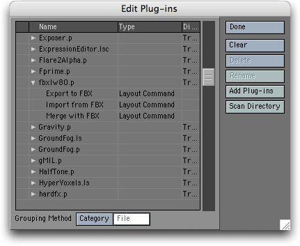
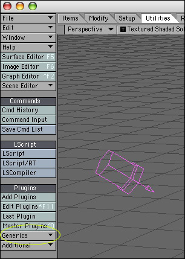
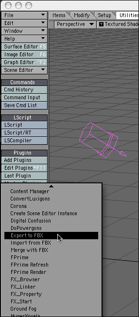

Previous
Previous
You can import meshes and animations from Lightwave using the FBX plugin for Lightwave.
Unity currently imports
- All objects with pivot points, position, rotation and scale
- Meshes with UV's and Normals
- Materials with Texture and diffuse color. Multiple materials per mesh.
- Animations
- Bone based animations
Installation
Download the latest Lightwave FBX exporter from:
By downloading these plugins you automatically agree to this license.
os x lighwave 8.0 plugin
os x lighwave 8.2 plugin
windows lighwave 8.0 plugin
windows lighwave 8.2 plugin
There are three versions of the plugin, one for LightWave 7.5, one for LightWave 8.0 and one for LightWave 8.2. Make sure you have the correct version: the LW7 plugin doesn't work properly with LW8.
The plugin comes in a OS X package. If you double click the package to install it, the installer will try put it in the correct folder. If it can't find your LightWave plugin folder, it will create its own LightWave folder in your Application folder and dump it there. If the latter occurs you should move it to your LightWave plugin folder (or any sub-folder). Once there you have to add the plugin to LightWave via the "Edit Plugins" panel (option-F11) - see the LightWave manual for more details on how to add plugins.

Once added to LightWave the plugin is acessible via the Generics menu (on the Utiliies) tab. If the Generic menu is not present you will have to add it using the Config Menus panel. In the latter panel it can be found in the Plug-ins category and is calld "Generic Plugins". Add it to any convenient menu (see the LightWave manual for more details on how to do this).
More information about installation can also be found in the release notes that can downloaded with the installer.
Exporting
All objects and animations have to be exported from Layout (there is no Modeler FBX exporter).
1. Select Export to FBX from the Generics menu
 
2. Select the appropriate settings in the fbx export dialog
- Select the fbx file name. Make sure to save the exported fbx file in the Assets folder of your current Unity project.
- In the FBX dialogue panel you MUST select "Embed Textures" else the exported object will have no UVs. This is a bug in the lightwave fbx exporter and will be fixed in a future version according to Alias.
- If you want to export animations into unity you must have "Animations" checked. You also need to have "Lights" or "Cameras" checked.
- To change the name of the exported animation clip in unity, change the name from "LW Take 001" to your liking.

3. Switch to unity.
- Unity will automatically import the fbx file and automatically generate materials for the textures.
- Drag the imported fbx file from the project view into the scene view.

Important notes
- You must select "Embed Textures" in the FBX panel when exporting or no UVs are exported
- If you want to export animations you must enable "Animations" and either "Camera" or "Lights".
- It is strongly recommended to always place your textures in a folder called "Textures" next to the fbx file. This will guarantee that Unity can always find the Texture and automatically connect the texture to the material.